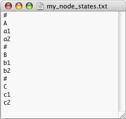

A names of node states file (names file) is a TEXT file listing the names
of all the states of one or more nodes of a net.
As an example, consider a file called my_node_states.txt, that
contains the following:

This names file refers to a net with 3 or more nodes. Three of the nodes of the net are: node A with states a1 and a2, node B with states b1 and b2, and node C with states c1 and c2.
Pressing Export/Names Of Node States... in the File menu will produce a file that follows the format rules for a Quantum Fog names file. If no nodes are selected in the Main Window, the file will contain the state names of all the nodes of the net. If some nodes are selected, the file will contain the state names of only those nodes which are selected.
Next we will state the general rules that one must follow in writing a names file for Quantum Fog. Some of the terminology used below is defined in the section entitled "Terminology-Alphabetic".
General Rules:
The order in which node names and state names are enumerated does not matter.